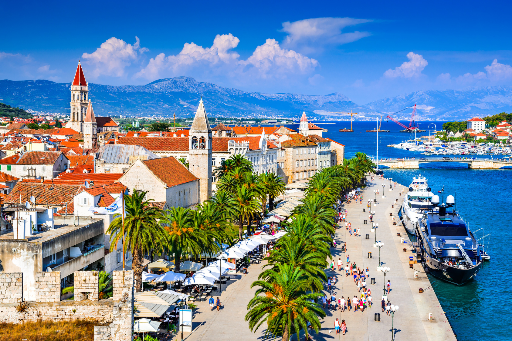
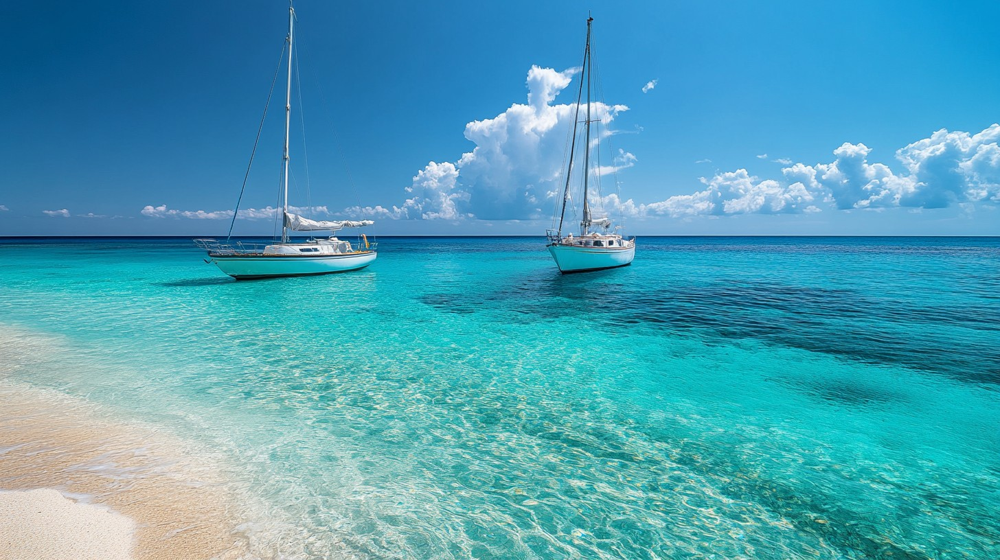

How to stock up for a sailing holiday
A practical Boatello guide to water, meals, local markets, storage, snacks, and an easy first day on board.
More infoSailing yacht and powerboat planning with live intelligence
Create tailored sea holidays for sailing vessels and powerboats, combining yacht availability, weather windows, marina stops, fuel planning, culture, food, provisioning, and day-by-day sea conditions.
Charter marketplace
A broker-ready search layer for weekly charters, skippered holidays, catamarans, sailing yachts, motor yachts, and day boats. Search can now connect to NAUSYS live availability when API credentials are configured.
Articles
Read articles about yachting destinations, equipment, boat handling, the marine world, attractions, and other activities at sea.

A practical Boatello guide to water, meals, local markets, storage, snacks, and an easy first day on board.
More info
Season notes for Greece, Croatia, Italy, Seychelles, and Thailand, with calmer shoulder weeks and warm-water windows.
More info
A practical guide to Meltemi, Bora, Jugo, Mistral, thermal breezes, trade winds, and when to stay flexible.
More infoCharter search layer
The page is ready for broker API results across sailing yachts, catamarans, powerboats, motor yachts, ribs, and premium crewed vessels in the same recommendation flow.

Stable living space, shaded decks, water toys, and easy swim stops.

Wind-led routes that adapt to licensing, crew confidence, swim stops, and weather.

Shorter passages, fuel-aware routing, beach clubs, watersports, and flexible day plans.
Holiday style
The planner should sell the feeling of the week: quiet mornings under sail, lazy catamaran afternoons, swim stops in clear bays, sunset wine, and a grilled seafood table ashore.


Ashore after the swim
Route recommendations can include tavernas, seafood stops, local markets, wine pairings, and provisioning notes so the holiday feels planned beyond the marina.
Photo by Tom Oates, CC BY-SA 3.0.Local credibility
A strong boat-holiday brand should feel close to home before it feels global. This section separates local half-day and weekend rentals from longer Mediterranean holidays, so first-time clients, corporate groups, and repeat charter guests all find the right entry point.
Half-day, evening, weekend, sailing yacht, motorboat, and skippered formats for simple client conversion.
Destination pages can connect to sailing and powerboat availability with AI route packs.
Use memberships, client logos, reviews, and media mentions near inquiry points.
Business on the water
Offer guided regattas, powerboat day cruises, company celebrations, client hosting, transport, meals, accommodation, and entertainment as one planned package. The AI planner can turn group size, timing, and risk tolerance into a clear event proposal.
Route engine
AI suggestions can blend forecast ranges, protected anchorages, marina availability, restaurant openings, fuel stops, cruising speeds, transfer times, and cultural priorities into a route that feels easy for clients and practical for crews.
Client experience
Travel style, budget, crew experience, food preferences, mobility, and celebration details.
Daily passages, marina alternates, fuel stops, swim stops, restaurants, markets, and transfer notes.
Shortlisted vessels, transparent assumptions, quote-ready client notes, and next actions.
Early season offer
Capture the essentials now: dates, crew, destination, boat style, speed preference, food preferences, and event needs. Later, API matches can appear directly beside the generated route.